Market pressure
Accounting and advisory firms that remain limited to traditional services risk losing relevance as clients adopt modern platforms, automation, and AI-enabled operating models.
Organizations grow faster when they build ecosystems of trusted partners. FutureCount helps accounting firms, advisory firms, and technology companies design, activate, and scale strategic partnerships that deepen client relationships, broaden service offerings, and create durable growth.

Built on 20+ years of experience working alongside partner ecosystems that included NetSuite, Oracle, SAP, Salesforce, Broadridge, Bloomberg, and global custody platforms.
Clients increasingly expect integrated solutions that combine advisory expertise, enabling technology, and implementation capability.
Accounting and advisory firms that remain limited to traditional services risk losing relevance as clients adopt modern platforms, automation, and AI-enabled operating models.
Technology companies face a parallel challenge. Strong products alone are not enough. Growth increasingly depends on the quality of the surrounding partner ecosystem.
A well-built ecosystem allows organizations to deliver more value than they could alone.
Add adjacent capabilities without building every competency internally.
Turn collaboration into a practical commercial engine rather than a loose referral network.
Use the right partners to open doors with new buyers, segments, and solution categories.
FutureCount works with leadership teams to turn partnership ambition into operating reality. ERP implementation is one example of this work, but not the whole story.
Define where partnerships should matter in your growth model, service mix, and market position.
Identify the right blend of professional-services and technology partners, then structure how work is sourced, sold, and delivered.
Build the operating practices, quality controls, and go-to-market discipline that turn partnerships into measurable value.
The sequence is simple on purpose: discover what matters, design the model, activate it with discipline, then scale what proves durable.
Assess market position, capabilities, partner opportunities, and growth constraints.
Define ecosystem architecture, target partner categories, quality gates, and strategic priorities.
Build the frameworks, motions, and operating practices required for real collaboration.
Refine the ecosystem over time to deepen value creation, standardize what works, and expand growth with accountability.
This is where strategy becomes a practical growth engine.
Broaden your relevance without overextending your internal bench.
Build a better commercial model around delivery and referral strength.
Stay connected to the expanding needs of existing clients.
Use software and implementation partners to accelerate client outcomes.
Move from episodic project work toward more strategic and recurring relationships.
Enter new segments with more confidence and less reinvention.
FutureCount works with organizations that believe growth comes from pairing expertise with the right ecosystem design.
Expand into higher-value advisory and technology-enabled services.
Build more deliberate alliance strategies and execution models.
Develop stronger partner channels around your platform.
Create ecosystems that support modern delivery and market reach.
Modern platforms, workflow automation, and AI are changing how value gets delivered. Organizations that build strong ecosystems around these shifts will be better positioned to stay relevant, win larger opportunities, and adapt faster as the market changes.
FutureCount works with leadership teams ready to turn strategic partnerships into measurable business value.
FutureCount works with accounting firms, advisory firms, and technology companies to design high‑value partner ecosystems. While many organizations begin with ERP implementation partnerships, the broader opportunity lies in building structured ecosystems that combine advisory services, technology platforms, and implementation expertise.
Our work draws on more than two decades of experience across enterprise technology, financial services, and consulting organizations including work with platforms such as NetSuite, Oracle, SAP, Salesforce, Broadridge, and Bloomberg.
The result is a repeatable model for growth: strategic partnerships that expand service offerings, strengthen client relationships, and create durable competitive advantage.